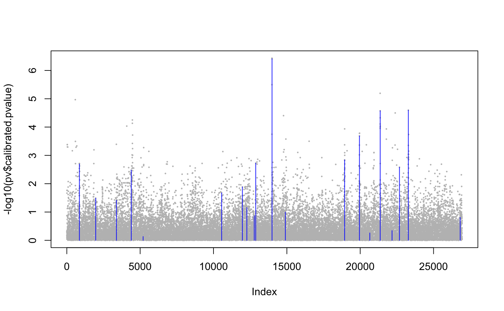
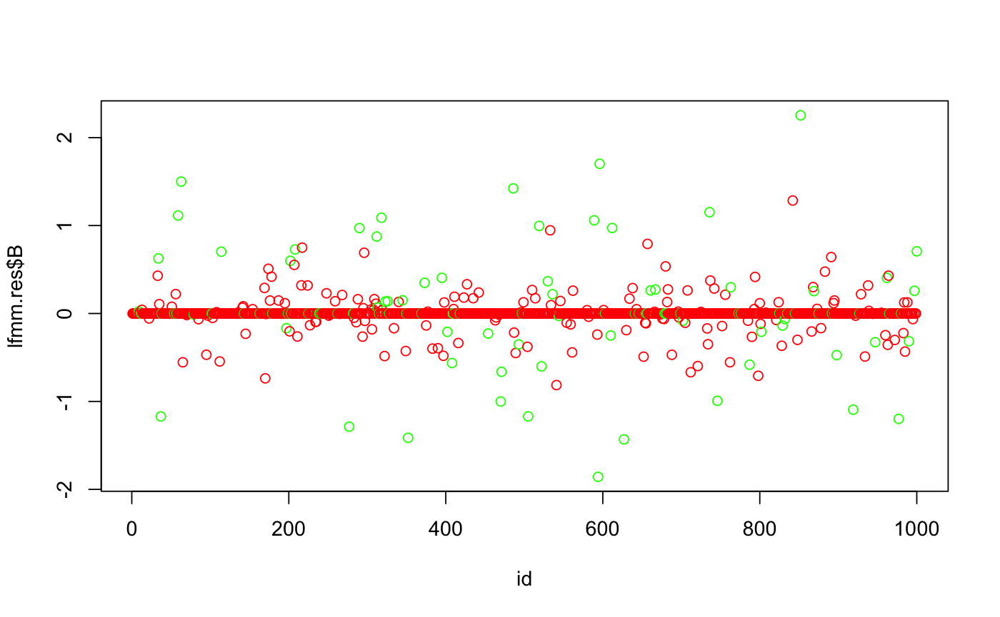

This function computes regularized least squares estimates
for the parameters of latent factor mixed models using a lasso penalty.
The algorithm minimizes the following penalized least-squares criterion
$$ Llasso(U, V, B) =
\frac{1}{2} ||Y - U V^{T} - X B^T||_{F}^2 + \frac{\lambda}{2}
||B||^{2}_{2} , $$
where Y is a response data matrix, X contains all explanatory variables,
U denotes the score matrix, V is the loading matrix, and B is the effect
size matrix.
library(lfmm)
data(example.data)
Y <- scale(example.data$genotype, scale = FALSE)
X <- scale(example.data$phenotype)
## fits an lfmm model, i.e, computes B, U, V:
mod.lfmm <- lfmm_lasso(Y = Y, X = X, K = 6)
#> It = 1/100, err2 = 0.163976365842701
#> It = 2/100, err2 = 0.150880987774137
#> It = 3/100, err2 = 0.150909671604174
#> It = 4/100, err2 = 0.150912383558556
#> It = 5/100, err2 = 0.150912749677702
#> === lambda = 0.134001530689845, no zero B proportion = 0.00244961585569536
#> It = 1/100, err2 = 0.150912812273505
#> It = 2/100, err2 = 0.150910779316069
#> It = 3/100, err2 = 0.150910428189908
#> === lambda = 0.127910954310315, no zero B proportion = 0.00397134691756672
#> It = 1/100, err2 = 0.150910366022453
#> It = 2/100, err2 = 0.150907743092996
#> It = 3/100, err2 = 0.150907276849468
#> === lambda = 0.122097204027054, no zero B proportion = 0.00612403963923839
#> It = 1/100, err2 = 0.15090719162528
#> It = 2/100, err2 = 0.150903815166109
#> It = 3/100, err2 = 0.150903192139827
#> === lambda = 0.116547697666749, no zero B proportion = 0.00898192480421631
#> It = 1/100, err2 = 0.150903073663069
#> It = 2/100, err2 = 0.150898862337595
#> It = 3/100, err2 = 0.150898059829834
#> It = 4/100, err2 = 0.150897902031642
#> === lambda = 0.111250424935286, no zero B proportion = 0.0122851946702297
#> It = 1/100, err2 = 0.150897870687079
#> It = 2/100, err2 = 0.150892704907325
#> It = 3/100, err2 = 0.150891685616081
#> It = 4/100, err2 = 0.150891477826459
#> === lambda = 0.10619392142495, no zero B proportion = 0.0167761570723379
#> It = 1/100, err2 = 0.150891434917958
#> It = 2/100, err2 = 0.150885401144219
#> It = 3/100, err2 = 0.150884160163538
#> It = 4/100, err2 = 0.150883895339663
#> === lambda = 0.101367243803054, no zero B proportion = 0.0224176966187878
#> It = 1/100, err2 = 0.150883837904276
#> It = 2/100, err2 = 0.150876469458079
#> It = 3/100, err2 = 0.15087485532031
#> It = 4/100, err2 = 0.150874486120321
#> === lambda = 0.0967599461282693, no zero B proportion = 0.0318450061240396
#> It = 1/100, err2 = 0.150874399827769
#> It = 2/100, err2 = 0.150865422922946
#> It = 3/100, err2 = 0.15086336601356
#> It = 4/100, err2 = 0.150862871104271
#> === lambda = 0.0923620572434217, no zero B proportion = 0.0410496232787737
#> It = 1/100, err2 = 0.15086274868988
#> It = 2/100, err2 = 0.150852710725416
#> It = 3/100, err2 = 0.150850349901389
#> It = 4/100, err2 = 0.150849762498263
#> It = 5/100, err2 = 0.150849611311142
#> === lambda = 0.0881640591958201, no zero B proportion = 0.0504398173922726
#> It = 1/100, err2 = 0.150849571636284
#> It = 2/100, err2 = 0.150838444702301
#> It = 3/100, err2 = 0.150835781023682
#> It = 4/100, err2 = 0.150835099439521
#> It = 5/100, err2 = 0.150834917624362
#> === lambda = 0.0841568666384127, no zero B proportion = 0.0615744349181606
#> It = 1/100, err2 = 0.150834867918799
#> It = 2/100, err2 = 0.150822489147181
#> It = 3/100, err2 = 0.150819437353788
#> It = 4/100, err2 = 0.150818626715313
#> It = 5/100, err2 = 0.150818401579661
#> === lambda = 0.0803318071671926, no zero B proportion = 0.0751957836914969
#> It = 1/100, err2 = 0.15081833747204
#> It = 2/100, err2 = 0.150804494594467
#> It = 3/100, err2 = 0.150801041811244
#> It = 4/100, err2 = 0.150800098121442
#> It = 5/100, err2 = 0.150799825351748
#> === lambda = 0.0766806025522997, no zero B proportion = 0.0914523252792933
#> It = 1/100, err2 = 0.150799744164611
#> It = 2/100, err2 = 0.150784321858072
#> It = 3/100, err2 = 0.150780430643039
#> It = 4/100, err2 = 0.15077934117561
#> It = 5/100, err2 = 0.150779016272733
#> === lambda = 0.0731953508221972, no zero B proportion = 0.108859444011432
points(example.data$causal.set,
-log10(pv$calibrated.pvalue)[example.data$causal.set],
type = "h", col = "blue")

#> length(cs) < K. Filling cs with zero
## run lfmm
lfmm.res <- lfmm_lasso(Y = dat$Y, X = dat$X, K = 3, nozero.prop= 0.2)
#> It = 1/100, err2 = 3.11646173621495
#> It = 2/100, err2 = 1.14609345505494
#> It = 3/100, err2 = 1.15041616815415
#> It = 4/100, err2 = 1.15102784006432
#> It = 5/100, err2 = 1.15113904208486
#> It = 6/100, err2 = 1.15115595536145
#> It = 7/100, err2 = 1.15115888673661
#> === lambda = 1.56359307579075, no zero B proportion = 0.007
#> It = 1/100, err2 = 1.15115939444051
#> It = 2/100, err2 = 1.15007442706944
#> It = 3/100, err2 = 1.14989053090887
#> It = 4/100, err2 = 1.14985899971849
#> It = 5/100, err2 = 1.14985358049349
#> === lambda = 1.49252535734319, no zero B proportion = 0.008
#> It = 1/100, err2 = 1.1498526484591
#> It = 2/100, err2 = 1.14863128367381
#> It = 3/100, err2 = 1.148416277359
#> It = 4/100, err2 = 1.14837780518903
#> It = 5/100, err2 = 1.14837086190001
#> It = 6/100, err2 = 1.14836960026035
#> === lambda = 1.42468777638059, no zero B proportion = 0.014
#> It = 1/100, err2 = 1.14836936962124
#> It = 2/100, err2 = 1.1469387354774
#> It = 3/100, err2 = 1.14667906606659
#> It = 4/100, err2 = 1.14663123927526
#> It = 5/100, err2 = 1.14662236806952
#> It = 6/100, err2 = 1.1466207143822
#> === lambda = 1.35993351816907, no zero B proportion = 0.016
#> It = 1/100, err2 = 1.14662040485204
#> It = 2/100, err2 = 1.1451210422745
#> It = 3/100, err2 = 1.14484450603
#> It = 4/100, err2 = 1.14479270991041
#> It = 5/100, err2 = 1.14478292862958
#> It = 6/100, err2 = 1.14478107046261
#> === lambda = 1.29812244093099, no zero B proportion = 0.02
#> It = 1/100, err2 = 1.14478071574269
#> It = 2/100, err2 = 1.14313779241684
#> It = 3/100, err2 = 1.1428323971196
#> It = 4/100, err2 = 1.1427747292589
#> It = 5/100, err2 = 1.14276374295433
#> It = 6/100, err2 = 1.14276163639753
#> === lambda = 1.23912077254877, no zero B proportion = 0.023
#> It = 1/100, err2 = 1.14276123038341
#> It = 2/100, err2 = 1.14119894095894
#> It = 3/100, err2 = 1.14091630029842
#> It = 4/100, err2 = 1.14086408239555
#> It = 5/100, err2 = 1.14085430690755
#> It = 6/100, err2 = 1.14085245771974
#> === lambda = 1.18280082105405, no zero B proportion = 0.024
#> It = 1/100, err2 = 1.14085210484513
#> It = 2/100, err2 = 1.13944225303561
#> It = 3/100, err2 = 1.13919175597026
#> It = 4/100, err2 = 1.13914629221701
#> It = 5/100, err2 = 1.13913793763332
#> It = 6/100, err2 = 1.13913638768611
#> === lambda = 1.12904069827549, no zero B proportion = 0.024
#> It = 1/100, err2 = 1.13913609784327
#> It = 2/100, err2 = 1.13768929778585
#> It = 3/100, err2 = 1.1374330094666
#> It = 4/100, err2 = 1.13738633520033
#> It = 5/100, err2 = 1.13737767126969
#> It = 6/100, err2 = 1.13737603786035
#> === lambda = 1.07772405604727, no zero B proportion = 0.029
#> It = 1/100, err2 = 1.13737572588225
#> It = 2/100, err2 = 1.13596079586246
#> It = 3/100, err2 = 1.13570890231685
#> It = 4/100, err2 = 1.13566261918823
#> It = 5/100, err2 = 1.13565391995923
#> It = 6/100, err2 = 1.13565225449616
#> === lambda = 1.02873983440725, no zero B proportion = 0.033
#> It = 1/100, err2 = 1.13565193076223
#> It = 2/100, err2 = 1.13430110125847
#> It = 3/100, err2 = 1.13406227736249
#> It = 4/100, err2 = 1.13401827953376
#> It = 5/100, err2 = 1.13400991135317
#> It = 6/100, err2 = 1.13400827730214
#> === lambda = 0.981982021239993, no zero B proportion = 0.038
#> It = 1/100, err2 = 1.13400795129263
#> It = 2/100, err2 = 1.13271410641121
#> It = 3/100, err2 = 1.13248798272778
#> It = 4/100, err2 = 1.13244655472398
#> It = 5/100, err2 = 1.13243867194524
#> It = 6/100, err2 = 1.13243712400769
#> === lambda = 0.937349422844303, no zero B proportion = 0.042
#> It = 1/100, err2 = 1.13243681215353
#> It = 2/100, err2 = 1.131276423278
#> It = 3/100, err2 = 1.1310788903185
#> It = 4/100, err2 = 1.13104323169473
#> It = 5/100, err2 = 1.13103646071162
#> It = 6/100, err2 = 1.13103511794927
#> === lambda = 0.894745444928891, no zero B proportion = 0.047
#> It = 1/100, err2 = 1.13103484209052
#> It = 2/100, err2 = 1.12999255186106
#> It = 3/100, err2 = 1.12982003341642
#> It = 4/100, err2 = 1.12978937659873
#> It = 5/100, err2 = 1.12978353066784
#> It = 6/100, err2 = 1.12978234188033
#> === lambda = 0.854077883562079, no zero B proportion = 0.056
#> It = 1/100, err2 = 1.129782086963
#> It = 2/100, err2 = 1.12882774326324
#> It = 3/100, err2 = 1.1286761606342
#> It = 4/100, err2 = 1.12864994051273
#> It = 5/100, err2 = 1.12864496693234
#> === lambda = 0.815258725623188, no zero B proportion = 0.067
#> It = 1/100, err2 = 1.12864393605993
#> It = 2/100, err2 = 1.12775092739141
#> It = 3/100, err2 = 1.12761548303738
#> It = 4/100, err2 = 1.12759321775065
#> It = 5/100, err2 = 1.12758917465546
#> === lambda = 0.778203958323707, no zero B proportion = 0.077
#> It = 1/100, err2 = 1.12758835826054
#> It = 2/100, err2 = 1.12672662785424
#> It = 3/100, err2 = 1.12660775224132
#> It = 4/100, err2 = 1.12659071092646
#> It = 5/100, err2 = 1.12658810484339
#> === lambda = 0.742833387386025, no zero B proportion = 0.086
#> It = 1/100, err2 = 1.12658766657235
#> It = 2/100, err2 = 1.12571221925165
#> It = 3/100, err2 = 1.12560097848994
#> It = 4/100, err2 = 1.12558724289086
#> It = 5/100, err2 = 1.12558565206252
#> === lambda = 0.709070463486212, no zero B proportion = 0.103
#> It = 1/100, err2 = 1.12558549949144
#> It = 2/100, err2 = 1.12477995388389
#> It = 3/100, err2 = 1.12468971138432
#> It = 4/100, err2 = 1.12468142074745
#> === lambda = 0.676842116585256, no zero B proportion = 0.119
#> It = 1/100, err2 = 1.12468125154767
#> It = 2/100, err2 = 1.12396396977643
#> It = 3/100, err2 = 1.12390090999169
#> === lambda = 0.646078597790185, no zero B proportion = 0.132
#> It = 1/100, err2 = 1.12390062330822
#> It = 2/100, err2 = 1.12324098379278
#> It = 3/100, err2 = 1.12320513565933
#> It = 4/100, err2 = 1.12321388065249
#> It = 5/100, err2 = 1.12321909962814
#> It = 6/100, err2 = 1.12322107857544
#> === lambda = 0.616713328402863, no zero B proportion = 0.154
#> It = 1/100, err2 = 1.12322175573543
#> It = 2/100, err2 = 1.12263052679106
#> It = 3/100, err2 = 1.12261873728238
#> It = 4/100, err2 = 1.12263617160168
#> It = 5/100, err2 = 1.12264435471617
#> It = 6/100, err2 = 1.12264735282613
#> === lambda = 0.588682755829735, no zero B proportion = 0.172
#> It = 1/100, err2 = 1.12264838301606
#> It = 2/100, err2 = 1.12211016582688
#> It = 3/100, err2 = 1.12212029848141
#> It = 4/100, err2 = 1.12214516530225
#> It = 5/100, err2 = 1.12215600943239
#> It = 6/100, err2 = 1.12216001719288
#> It = 7/100, err2 = 1.12216142092835
#> === lambda = 0.561926216040709, no zero B proportion = 0.196
#> It = 1/100, err2 = 1.12216191041077
#> It = 2/100, err2 = 1.12164716864754
#> It = 3/100, err2 = 1.121668954116
#> It = 4/100, err2 = 1.12169796176476
#> It = 5/100, err2 = 1.12171050449515
#> It = 6/100, err2 = 1.12171519251133
#> It = 7/100, err2 = 1.12171689604727
#> === lambda = 0.536385802279483, no zero B proportion = 0.225
## plot size effect matrix
id <- seq_along(lfmm.res$B)
cols <- c('red', 'green')[as.numeric(id %in% dat$outlier) + 1]
plot(id, lfmm.res$B, col = cols)
